Toxic

Iván and Héctor have been neighbours for several years but never met until the lockdown, due to the pandemic forcing them to stay in their apartments.
Solpor

A middle-aged man lives in his car after becoming unemployed and moving away from his family. After some time living in this situation, the same man begins to run out of resources to be able to buy the food he needs to live.
Habibi

A city bus runs through the city. It stops and an Arab couple gets on. He addresses her in a loud, nervous voice. The passengers watch the increasingly heated argument with distrust and concern until one of the passengers decides to intervene: "You, habibi, sit down...".
The Black Hen
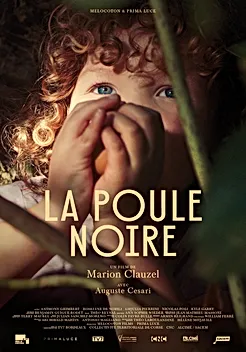A city bus runs through the city. It stops and an Arab couple gets on. He addresses her in a loud, nervous voice. The passengers watch the increasingly heated argument with distrust and concern until one of the passengers decides to intervene: "You, habibi, sit down...".
The Industrial
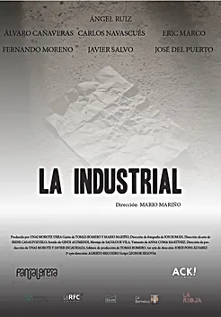Spain experiences the beginning of its civil war in the summer of 1936, after a coup d'état. In the small city of Logroño, the fascist victory was not long in coming and the majority of republican men and women were arrested.
Lost
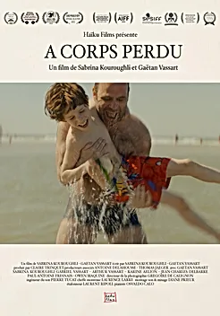On a sunny day, parents will experience the darkest day of their lives. In this drama, two worlds come together: that of joy, relaxation, beach games of vacationers, and the tragedy of parents linked to the disappearance of their child on the other.
Joselito

In a small town in the Sierra de Segura, there is an old electronics genius who is capable of fixing anything. The neighbors know him as Joselito, and through his wife they trust him with everything that goes wrong.
Eden
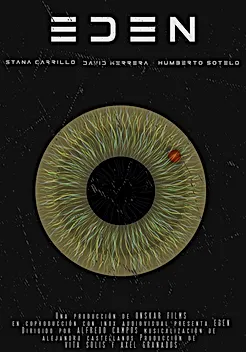An old Eden collect mushrooms and plants in the wood. He remembers that when he was young, met his beloved while the world was being destroyed for the pollution and the nuclear crisis.
In The Shadow
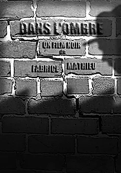A shadow is telling its life story with his "Wearer", a flesh and bone double, who one day it decides to get rid of...
Pale Monster

Pale Monster is a short film inspired by the novel of the same title by Juan Bolea, which was published by Editorial Planeta in 2015. It tells the story of a criminal law firm, their relationships, their ambitions, until a crime will shake them.
Like Every Thursday
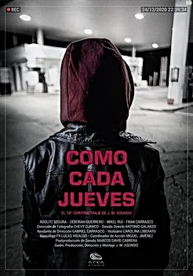On Christmas Eve 2020, a girl was involved in a robbery at a gas station where she went every Thursday to pick up something very important to her.
Memories of Blood
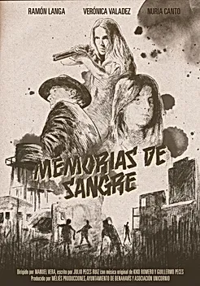In the far and unforgiving lands of the West, a young woman survives on her own in the wild. As she faces alone the strange dangers that surround her, the memory of her childhood in her hometown comes to her mind.
Radio Spectrum
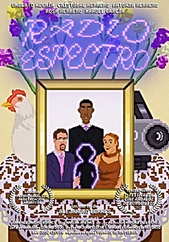A boy becomes involved in the lives of his mother and aunt, with whom he works in a neighborhood supermarket. The boy focuses his attention on finding his dead father. He decides to approach his uncle, an older man who lives alone in his cottage, whom he will help build a photographic machine that can capture the aura of people and things that are no longer with us.
Dativa
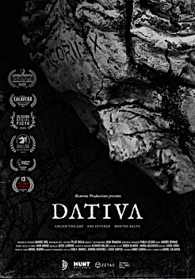A woman is prostrated on a dead tree, in the middle of a wasteland, surrounded by branches like spider webs. She can't move and can only hear her thoughts. A Creature approaches her, wants to ask her for something...
My Condition
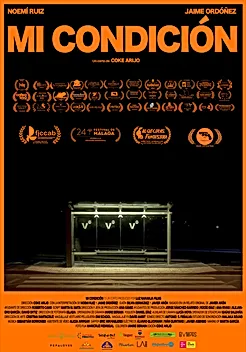Walking home alone at night is not a tasteful dish for any woman. Nor for Sofia, who must wait at the stop for her bus to arrive. When a tired art teacher arrives there is a conversation between them in which nobody is who they say they are.
Broken Wings
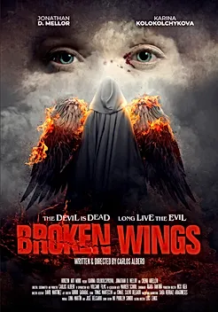A woman sitting on a comfortable divan has a deep conversation with her psychiatrist, while she tries to delve into the philosophy of good and evil and rambles about the remote possibility of the existence of a god.
Safe
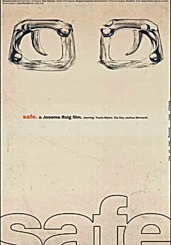Lynn Marie is 7, and she's afraid of a monster outside. Her teenage brother couldn't care less and her Dad is too sleep deprived and overworked. But Dad will have to deal with more than he bargained for when a real noise does startle them.
The Farmhouse
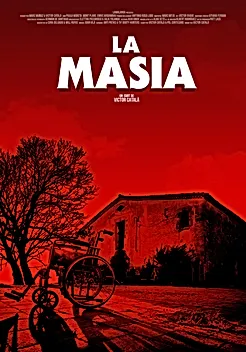Helga spends a few days with her grandparents whom she hasn't seen for years, two sinister old men who live in a huge Catalan farmhouse lost in the middle of nowhere.
The Paradise
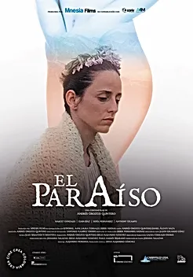A wasteland is revered and protected as the Garden of Eden from which Adam and Eve were expelled. In the company of a submissive young woman, Joaquín, a teenager thirsty for adventure, longs to discover what the forbidden zone of paradise hides.
Save Yourself
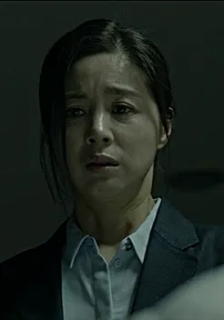Jin-Kyung, a call center counselor for "SOS Call of Hope," turns people's minds, listens to stories, and comforts and supports them in a crisis of suicidal thoughts. A woman's cold voice came one night. The sound is the voice of Jin-Kyung's dead sister, who ended her life by suicide.
Moon
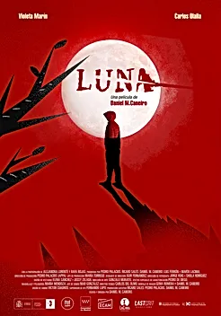Ismael sweeps the floor of an amusement park. On the floor, a crumpled sheet of paper with a photo of a missing girl stands out above the rest of the trash. A woman nervously asks if she has seen her daughter and Ismael tells her that she hasn't.
Fearless
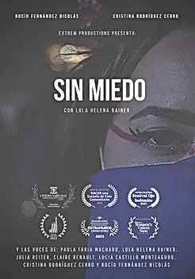Seven women united by the demonstrations to erradicate violence against women in the city of Graz, Austria, tell us about their experiences, ideas and opinions about patriarchy, a global reality against which they are fighting.
The Burden Upon
Me
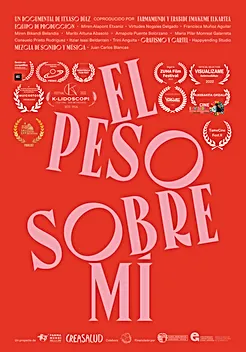
Care is essential for the sustainability, health and well-being of all people. A task whose weight falls mainly on women who do not usually have family, social or institutional support. The documentary The weight on me collects 5 testimonies and proposes a critical reflection on isolation, the lack of co-responsibility and the need for self-care that these invisible and little recognized tasks imply in our societies.
Dancing with Rosa
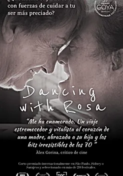At 84 years of age, Rosa realises that she no longer has the strength to take care of her daughter Eva who has Down syndrome, and she struggles to decide whether or not to put her into a care home. In this intimate portrait, we follow Rosa’s pain of indecision and her unique way of coping.
Dajla: Cinema and
Oblivion
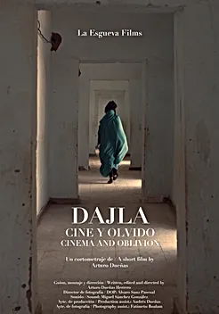
Life is going on in Dakhla, one of the Sahrawi refugee camps in southern Algeria, forgotten for 45 years. Since they cannot go to the cinema, the cinema reaches them: the celebration of Fisahara breaks the monotony. With it come foreigners, politicians, artists, journalists ... The event ends and life (and oblivion) continues. As for 45 years.
Shades of Beirut
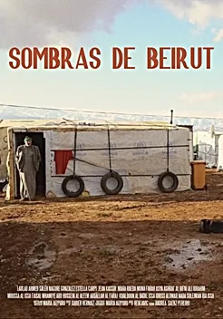Lebanon is the country with more refugees per capita in the world, reaching a third of the population. How is this managed? Researchers explain that they are not considered as refugees, but displaced people that can only work in three sectors: construction, agriculture and cleaning.
Opening The Path
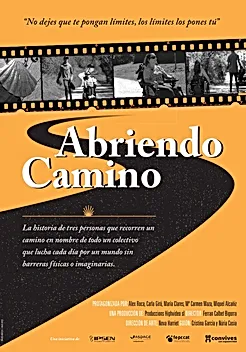“Opening the Path” is a metaphor to tell you a story: the experience of 3 people who walk a path on behalf of a whole group of people with cerebral palsy or disabled for other reasons, people who fight every day for a world without physical or imaginary barriers.
Breathing Under a
Cloth
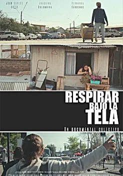
A facemask vendor (53), a public hospital housekeeper (53), and a young worker and student attending online classes (23) invite us to follow their houses, streets, and work to expose how their lives have been hitten by the Covid-19 pandemic.
After the Fire
The year 2020 was relentless for the Pantanal. In the midst of a merciless period of drought, the biome was punished by the worst fires in its history. A year later, residents of the Baía Negra Environmental Protection Area strengthened their community fire brigade to prevent further disasters.
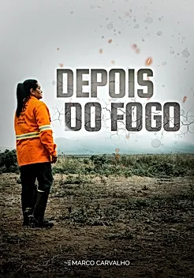Kambana
Mother and twin sons are socially rejected because of being twins. In the Mananjary region of Madagascar, there is a popular belief that twins are carriers of misfortunes.
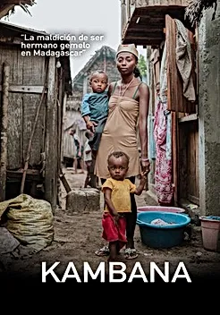Missione Euridice
From 5 years ago, at the bottom of the Gulf of Cefalù, Sicily, there were a ton of abandoned fishing nets that continued to fish, killing marine animals and suffocating the area. The brothers Andrea and Marco Spinelli, thanks to a collection of money, have carried out the Eurydice Mission, to extract and eliminate the nets.
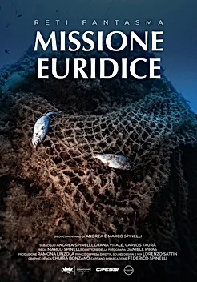The White Monster
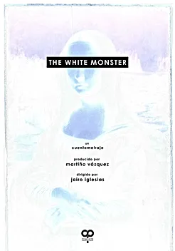THE WHITE MONSTER tells the story of a girl whose father tells her a story every night. However, one day there is something that does not quite convince the protagonist. Her father tries to show normality without giving it importance, but when he is going to leave the room, her daughter asks him not to turn off the light, because otherwise the monsters will appear...
This World is
Wonderful
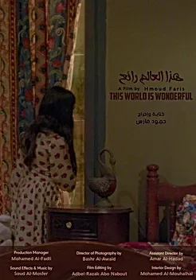
A mother recalls her childhood when she is expressing signs of hate towards her son.
Sempreverdi
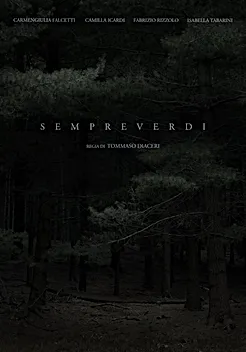Evergreen Forest narrates about a special moment in the life of two thirteen-year-old girls, bonded by a strong rare, and beautiful friendship, when they decide to overcome their biggest fear from their childhood days. Valentina and Valeria have fantasied since little girls, about the nature of a deep forest near to their homes.
Under the Hands

Throughout our life we are born and die many times. During all this time we collect all kinds of experiences.
There
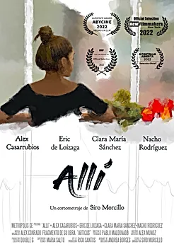April 2022. A young couple has just moved into an old empty house, Manzano and Pia. From the first night they spend in it, they perceive that there is something that connects them with that place. A painting hanging on the wall is the only and solitary object left by the former tenants.
Re-Animal
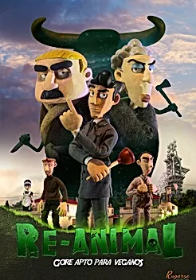A series of crimes is devastating the city and there is only one person who is capable of finding the culprit: Toni Clues. When Mr. and Ms. Mendoza are murdered, their family decides to hire him. But time is against him as new victims begin to appear and the police are nowhere to be seen. He will have to use all his track-hunting skills to try to solve the mystery: who is behind such gory deaths?
Repeated Memories
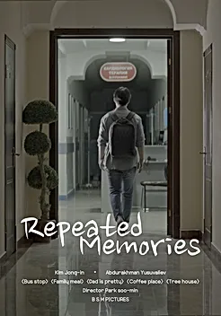Jong studies in Uzbekistan and works as a part-time carer. Same as always, he spoon-feeds patients, cleans rooms and also toilets. One day, he gets a call from his friend, Ha-yeong. “I have a job for you. There an one old man who is blind and deaf. He is just waiting for his dying day. Your job is acting like his son and eating dinner with him.
Tell Him Everything
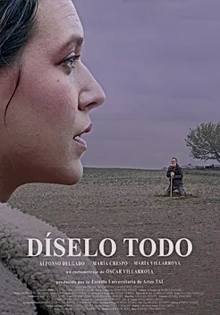"Tell Everything" is the story of a farewell between a father and his daughter. The spirit of the deceased mother returns home to rescue the last moments they spent together, reminding them that time is running out and that it is necessary to untie the knots, reopen the armor and lift the dam of everything that was left to say.
Nimeni
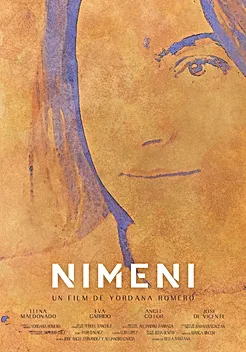Nimeni's story starts from the protagonist’s own name: Nimeni, a pronoun with a latin origin that encloses in the Romanian language two thunderously opposite meanings: No one and Someone. In this dark drama this ambivalence envelops the soul of the main character, with an impact that reaches sinister limits.
Vincent
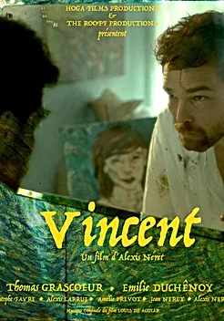When an unrecognized painter goes insane, he has visions of a muse trying to guide him towards redemption.
Sea Light
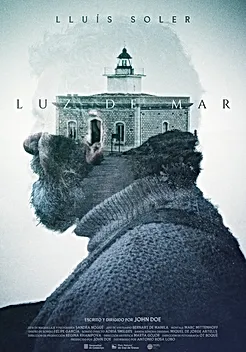An elder lighthouse keeper takes care of what has been his home for years. Old and secluded from society, he's disturbed by mysterious bottled letters. These and an unexpected malfunction make him doubt his job, his life and his existence.
My First Choice
Blanca thinks that opening up about the sexual problems she has with the father of her son could help to soothe her friend who is about to undergo a medical test. However, Julia, who has been diagnosed with breast cancer, allows herself to be bluntly honest and speak her mind freely about what she really thinks about her friend’s current partner.
Kor
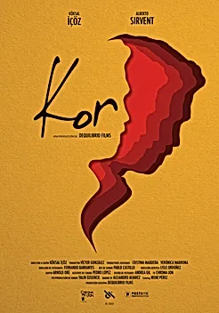Mehmet and Pablo meet after a long time. What at first seems to be a meeting to celebrate Pablo becoming a father, will end up becoming a very different matter. Everything will change for Pablo after Mehmet asks him for a favor that will mark his life forever.
Like Anyone Else
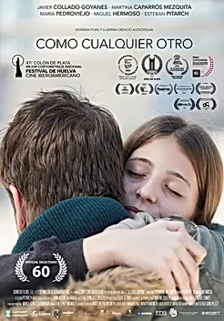Esteban has lost his wife and is about to lose his daughter. Letting her go, however, may be the only way to get her back..
There is Still Dust
Under the Congo
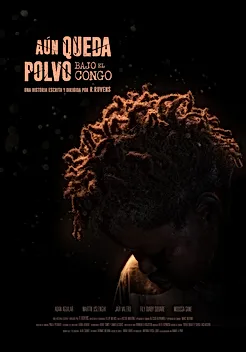
David and Roberto, a couple of journalists stationed in the Democratic Republic of the Congo, take refuge from the war in a shelter full of rubble. There they will run into Badou, a frightened and friendly child with whom quickly, and thanks to photography, they will make friends with.
Meatballs
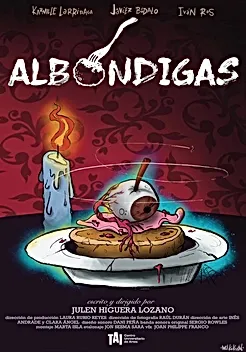A mother and her son scrape by in charge of a declining restaurant. Their sordid relationship comes to an end when a strange but important customer arrives, promising to put them out of their misery. Insatiable, this customer will wipe out all the restaurant’s supplies. However, unsatisfied and in search of the perfect dish, he places one last order; meatballs with sauce…
Ruffled Feathers
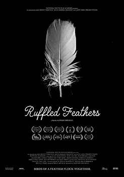Ruffled Feathers” is a psychodrama and experimental character study of the female juvenile prisoner. Set in a bleak and hopeless borstal for young women, we follow the ‘birds’ through a world of their own creation as they deal with questions of love, friendship, oppression and violence simultaneously
Elevator Pitch
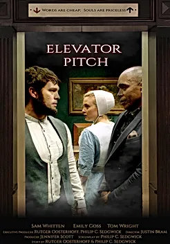A moral, but romantically conflicted young man is confronted by a deity whose offer for conflict resolution is more tempting than temptation itself.